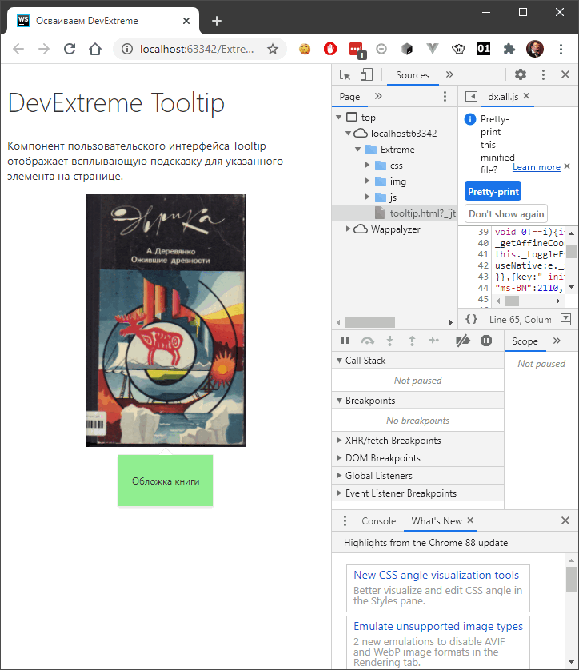

Заморозка страницы в Chrome Developer Tools
Бывает так, что нужно отладить HTML/CSS на странице,
но DOM-элементы появляются и исчезают буквально
от малейшего движения мышью, а также по причине
срабатывания таймеров в JavaScript. На этот случай
в Chrome Developer Tools
предусмотрена «заморозка» страницы.

- Открываем нужную страницу.
- Открываем DevTools: F12.
- Переключаемся на вкладку
Sources в DevTools.
- На странице зависаем мышью над нужным нам элементом, чтобы,
например, появился нужный нам попап.
- Нажимаем F8. Важно: последний клик мышью
перед нажатием F8 должен быть
в области инспектора, а не на веб-странице!
- Неспеша находим нужный нам элемент в DOM-дереве,
изучаем, редактируем его свойства, не опасаясь,
что он пропадёт.
- Чтобы снять «заморозку» страницы, снова нажимаем
F8.
Очень полезная фича!